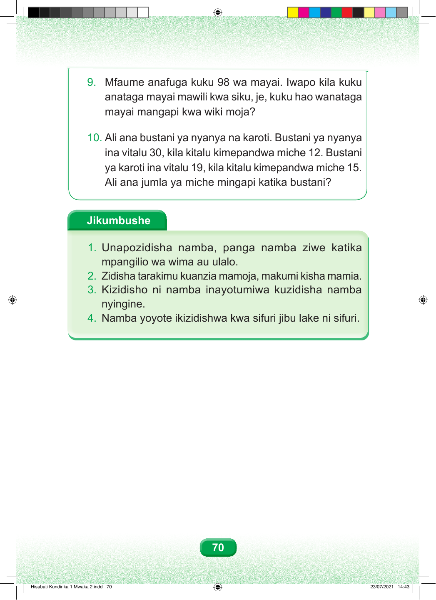

9. Mfaume anafuga kuku 98 wa mayai. Iwapo kila kuku anataga mayai mawili kwa siku, je, kuku hao wanataga mayai mangapi kwa wiki moja? 10. Ali ana bustani ya nyanya na karoti. Bustani ya nyanya ina vitalu 30, kila kitalu kimepandwa miche 12. Bustani ya karoti ina vitalu 19, kila kitalu kimepandwa miche 15. Ali ana jumla ya miche mingapi katika bustani? Jikumbushe 1. Unapozidisha namba, panga namba ziwe katika mpangilio wa wima au ulalo. 2. Zidisha tarakimu kuanzia mamoja, makumi kisha mamia. 3. Kizidisho ni namba inayotumiwa kuzidisha namba nyingine. 4. Namba yoyote ikizidishwa kwa sifuri jibu lake ni sifuri. 70 Hisabati Kundirika 1 Mwaka 2.indd 70 23/07/2021 14:43